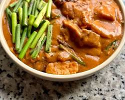

INGREDIENTS
- 1 cup raw peanuts
- 1/2 cup roasted peanuts
- 1/4 cup water
- 1/4 cup toasted glutinous rice (optional)
- 1 kg oxtail, cut into 2-inch pieces (you can substitute with beef shank or pork belly)
- 1 small banana blossom, trimmed and sliced
- 1 bunch pechay or bok choy
- 1 bunch string beans, cut into 2-inch pieces
- 4 eggplants, sliced
- 1 onion, chopped
- 5 cloves garlic, minced
- 1 tbsp annatto extract or seeds (soaked in 1/2 cup water)
- 1 liter water
- 1/2 cup shrimp paste
- 1 tbsp fish sauce
- Salt and pepper to taste
- Cooking oil
-
OPTIONAL: Bagoong alamang (shrimp paste) and bagoong isda (fish paste) for serving
|

|
PROCEDURE
- Make the peanut butter: Toast both types of peanuts in a dry pan over medium heat until fragrant. Grind them together with the water and toasted rice (if using) until you have a smooth peanut butter.
- Prepare the vegetables: Parboil the string beans, eggplants, and banana blossom separately for 5 minutes each. Drain and set aside.
- Cook the meat: In a large pot, heat oil over medium heat. Brown the oxtail pieces on all sides. Add onion and garlic, cook until softened.
- Add water and simmer: Pour in the water and bring to a boil. Reduce heat and simmer for 1-2 hours, or until the meat is tender.
- Add flavors: Add the annatto extract (or strained annatto water), shrimp paste, and fish sauce. Simmer for another 10 minutes.
- Combine: Stir in the peanut butter and simmer for 5 minutes to allow the flavors to meld.
- Add vegetables: Add the parboiled vegetables and gently cook for 5 minutes to heat through.
- Season and serve: Season with salt and pepper to taste. Serve hot with steamed rice and bagoong alamang and bagoong isda on the side.
|
Kare-kare is a Philippine stew (kare derives from "curry") that features a thick savory peanut sauce.
It is generally made from a base of stewed oxtail, beef tripe, pork hocks, calves' feet, pig's feet or trotters,
various cuts of pork, beef stew meat, and occasionally offal. |